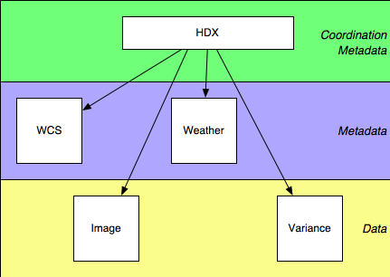

Starlink has developed the HDX data model and implemented it in a Java data access library. The model is XML-based, layered on top of FITS and other data storage formats, and it is thus a straightforward and elegant solution to the problem of associating disparate data sets in network-usable structures. Starlink has ten years of experience with the precursor of this model, in terms of the tradeoff between flexibility and usability; this tradeoff is surprisingly close to the simple extreme, and we believe this to be a winning move for VO developments.
The data model and its XML representation are not data transport formats, but instead complement these by adding arbitrary structure to external storage (such as FITS files), by using URIs in a principled, flexible and REST-ful way, which is therefore compatible with future developments in repository/replica technology, as well as being naturally compatible with SOAP-based grid services.
We have implemented this model in an extensible, pluggable Java library, which incorporates VOTables. We are basing our current software developments on this structure.
$Revision$
HDX is two things:
HDX does not attempt to solve all problems. There are examples of use.
HDX is...
HDX functions as a coordination layer, tying together otherwise distinct metadata. We can visualise a hierarchy of metadata as follows:

In the bottom layer are the bitbuckets containing the data, and above that are various structures describing that data. We can detach that metadata from the data it describes (conceptually, if not literally), with the result that (a) it becomes natural to associate a particular piece of metadata with several different bitbuckets by the same mechanism through which we associate the image and corresponding variance, say, and (b) the different types of metadata then become naturally independent of each other, and can be specified and evolved at different rates. Since in this scheme each chunk of metadata conceptualy refers to a single bitbucket (for example, WCS information specifies how a single pixel grid maps to the sky, even if that WCS information is separately associated with two distinct bitbuckets), the metadata standards are relieved of the need to express and maintain coordination information. That information is supplied by the higher layer in the diagram, HDX, which associates data objects with each other and with the metadata which describes them. Factoring out the coordination information in this way makes the metadata simpler, and leaves the coordination metadata having to solve a rather simple problem; as a result, the HDX model and syntax are not complicated.
Although HDX as such is only a framework for tying together data descriptions, with code support for creating new types, there are some structures which are already defined as part of it. We describe two such in the sections below.
The most developed substructure presently defined within HDX is NDX, describing images. This builds directly on a data model, NDF, that Starlink has used heavily over the last decade, finding it to be very close to the optimum trade-off between sophistication and usability. That this model is in some respects simpler than one might expect, is simpler than NDF's prototype versions, and is simpler than some current proposals for metadata structures, we believe vindicates the drive for simplicity that has informed the HDX design.
An NDX looks like the following:
<hdx>
<ndx>
<image uri="file:/tmp/mydata.fits"/>
<variance uri="file:/tmp/mydata-var.fits"/>
<quality uri="http://telescope.edu/instrument/bad-pixels.fits"/>
</ndx>
<wcs tbd="true"/>
<etc>[...]</etc>
</hdx>
It contains an <image>, plus optionally
<variance> and <quality>
(representing data errors and bad data respectively), plus
optional <history>, plus other structures
present in the NDF design, not yet fully translated into XML
terms. Each of these refers to the actual data through a
uri attribute pointing to, most typically, a FITS
file.
There is Java library support for sophisticated operations on the data thus expressed.
The table module within HDX is under active development, but, consistent with the rest of HDX, it is likely to remain rather simple. This work will integrate with VOTables as much as possible, and one of the functions of the VOTable support within the Tables module is to present VOTables, among others, in this simpler model.
There is no DTD or Schema definition of HDX, or its component modules. If there were a DTD definition of HDX, it would be
<!ELEMENT hdx ANY>
...so there doesn't seem a great deal of point. The point of HDX does not lie in its intricacy, but in the power of the approaches the mere existence of the bag makes possible.
There are no predefined schemas for the modules of HDX such as NDX and Tables. When code registers new types with the HDX system (such as NDX), it also registers validators, and it is this validating code which is responsible for deciding whether a given XML structure is valid or not. As part of that module's documentation, it may publish a specification of what it will accept as valid, but this is not required.
There is little point in demanding strict XML
validity, since it is not necessarily the case that a particular
HDX structure will ever see an XML parser. Although the
description here is expressed in terms of XML, a data set could
be instantiated from a .sdf file, manipulated using
a DOM, serialised as a Java object, and written to a structured
FITS file, without ever seeing an angle-bracket once.
See the current javadocs for the project as a whole.
The ideas of `HDX-as-a-data-model' described above is spartan, but provides the set of concepts on which we build the HDX Data Access Layer. Although the notional HDX DTD, above, is trivial, the Java packages which support it can naturally provide a good deal of infrastructure.
Data is structured using XML concepts, and can be generally manipulated as XML when this is appropriate (for example within a generic data editor, or in archiving contexts), but for processing, this would be horrendously inefficient, and so the data access classes present alternative Java interfaces to the objects they manage, which are designed for computational efficiency.
The HDX package (uk.ac.starlink.hdx) at present
provides:
xml:base resolution.It has hooks, but not yet code, for:
The NDX and NDArray packages (uk.ac.starlink.ndx
and uk.ac.starlink.array)
provide classes for manipulating N-dimensional arrays in an
efficient and general fashion. They provide a consistent interface
which can cope with large arrays, pixel errors, simple or
sophisticated pixel quality marking, world coordinate systems,
varying pixel ordering schemes, processing history and extensible
metadata storage. At the applications level, code does not need to
be aware of the format (FITS, HDS, ...) in which the data is
stored.
The project has so far concentrated on expressing its work robustly in code, and is building a solid foundation, upon which it can elaborate its ideas in carefully enhanced metadata expressing various roles for included data structures.
A few words are in order about the simplicity aspect of HDX: it is simple because it identifies a particular problem, and solves it cleanly; and it does not attempt to address problems where an adequate solution already exists.
HDX does not attempt to be a data transport or data description system, since formats like FITS manage that perfectly well. Where FITS struggles is in trying to describe interrelationships between data, or in attempting to describe highly structured metadata: the length of time it is taking to standardise FITS WCS information indicates that FITS headers may not be the ideal language to describe the solution.
The WCS problem also illustrates that certain aspects of particular files' metadata are highly structured, and that that structure is highly specific to the particular metadata in question -- `where are these particular pixels pointing?', `what application processed this last?'. This suggests that a `one spec fits all' approach is doomed to protracted birth pangs, since any spec comprehensive enough to be useful, is complicated enough to be contentious. That is, one-size-fits-all will never be finalised: if different parts of a spec address different problems, the fact that they are artificially yoked together means that it could be dificult to evolve those parts at different rates.
Instead, we suggest a componentised approach, with standards for metadata addressing WCS and provenance information, say, developed largely separately, and tied together in any particular instance by the larger-scale coordination of HDX. There is ongoing work on expressing WCS information in XML (including work from Starlink describing our very successful AST system), and there are groups developing provenance descriptions. Neither of these examples need be built into HDX directly. HDX is able to be simple, because it deals, cleanly and straightforwardly, with a particular layer of the architectural problem.
An example of a basic HDX object, expressed as XML, is:
<hdx>
<ndx>
<image uri="file:/tmp/mydata.fits"/>
<variance uri="file:/tmp/mydata-var.fits"/>
<quality uri="http://telescope.edu/instrument/bad-pixels.fits"/>
</ndx>
</hdx>
This associates the content of the
/tmp/mydata-var.fits file as the variance component
of the image in /tmp/mydata.fits. It is
straightforward (and obviously preferable), but not yet
standardised, to refer to individual FITS extensions in a URI,
and thus to keep the image and variance together in a single
FITS file.
XML Namespacing can be used to include HDX information within `foreign' XML:
<foreign xmlns:x="http://www.starlink.ac.uk/HDX">
<x:hdx>
<x:ndx>
<x:image uri="file:/tmp/mydata.fits"/>
</x:ndx>
</x:hdx>
</foreign>
or even:
<mystructure>
<mypointer x:name="ndx" xmlns:x="http://www.starlink.ac.uk/HDX">
mydata.fits
</mypointer>
</mystructure>
which the HDX system will read, and present to its caller in the canonical form:
<hdx>
<ndx>
<image uri="mydata.fits"/>
</ndx>
</hdx>
Any changes made to this virtual XML structure may optionally be automatically shadowed in the original XML.